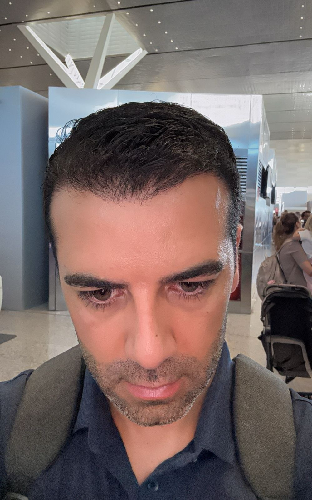
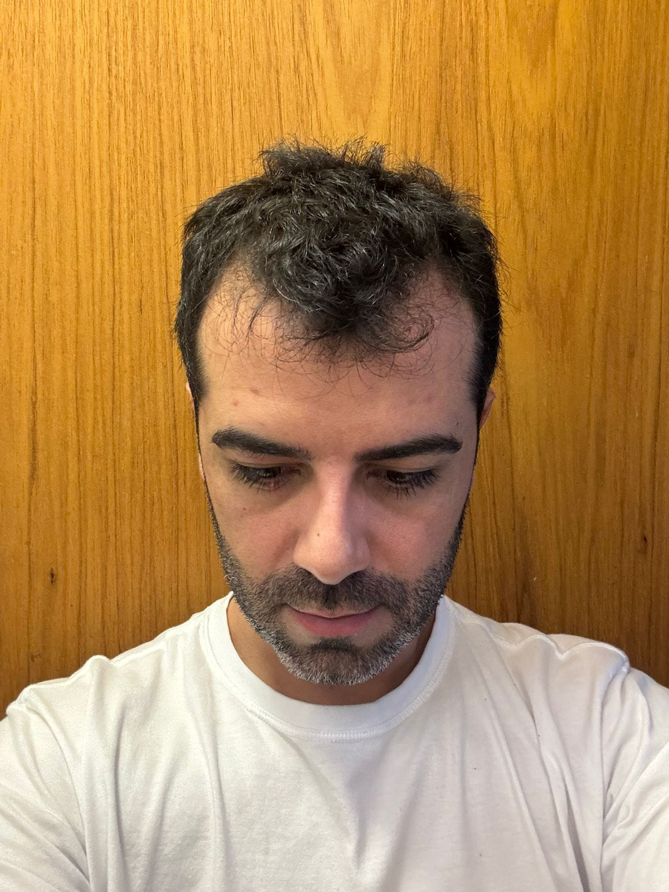
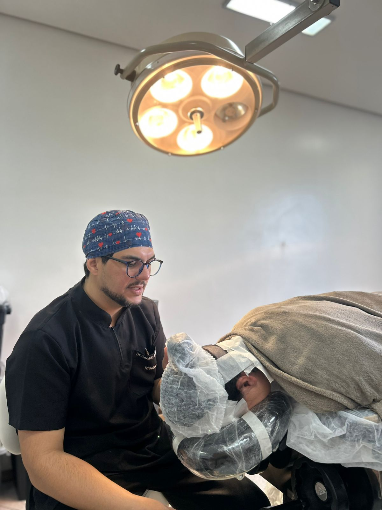

Dr. Denildo Sobrinho · CRM 55898/RS
Tratamento individualizado do diagnóstico ao acompanhamento — técnica FUE fio a fio, com planejamento específico para o seu caso.
Primeira avaliação com 50% de desconto — mencione o site ao agendar.

Resultados reais
Pacientes atendidos pelo Dr. Denildo. Arraste a linha sobre cada foto para comparar o antes e o depois.
Resultados individuais podem variar de acordo com cada paciente.
Dr. Denildo Sobrinho
CRM 55898/RS
O profissional
Habilitado em transplante capilar com foco em recuperar a sua identidade visual. Cada caso recebe um protocolo próprio — desenhado a partir do padrão de queda, do perfil metabólico e do resultado que faz sentido para você. Atende em Cruz Alta e Encantado, RS.
Avaliação presencial completa
Análise do couro cabeludo, densidade e padrão de queda antes de qualquer decisão.
Protocolo individualizado
Transplante, soroterapia e suplementação combinados conforme o seu caso — causa tratada, não apenas sintoma.
Acompanhamento contínuo
Suporte no pós-operatório, com revisões e ajustes até o resultado definitivo.
Níveis de calvície
A escala de Norwood classifica a evolução da calvície de padrão masculino. Identificar o estágio ajuda a definir o tratamento certo — no momento certo.
Leva menos de 1 minuto · sem compromisso
Por que avaliar agora
A queda segue o próprio curso
A calvície de padrão genético tende a avançar por estágios ao longo do tempo.
A área a ser tratada aumenta gradualmente.
A área doadora é finita — estágios avançados contam com menos recursos.
Decisões por tentativa e erro, sem diagnóstico da causa.
O caso é conduzido com método
A causa da queda é identificada e tratada desde o início.
O planejamento respeita o seu estágio e o seu padrão de queda.
A janela ideal de tratamento é aproveitada, preservando a área doadora.
Acompanhamento médico contínuo, do diagnóstico ao resultado.
Quanto antes o padrão é identificado, mais opções de tratamento existem.
Serviços
Valores definidos após avaliação individual. Agende sem compromisso.
Sem cicatriz linear. Resultado natural e permanente. Retorno em 3 a 5 dias.
Nutrição folicular via intravenosa. Acelera o crescimento e fortalece os fios.
Identificação e tratamento da causa raiz. Acompanhamento clínico contínuo.
Prescrição baseada no perfil metabólico. Fios mais fortes de dentro para fora.
Diagnóstico completo: couro cabeludo, densidade e padrão de queda.
Estimula a regeneração folicular e potencializa a absorção dos ativos.
Revisão, suplementação ajustada e cuidados pós-transplante.
Como funciona
Quatro etapas claras. Você sabe o que esperar em cada uma.
Etapa 01 · Presencial
Avaliação Capilar Personalizada
Perfil capilar, causa da queda, expectativas. A base de tudo.
Etapa 02 · Planejamento
Protocolo Integrado sob Medida
Transplante + soroterapia + suplementação personalizada. Causa tratada, não apenas sintoma.
Etapa 03 · Cirúrgico
Procedimento com Precisão
Fio a fio. Cada implante no ângulo natural.
Etapa 04 · Pós-procedimento
Acompanhamento Completo
Suporte, suplementação ajustada e acompanhamento contínuo.
Evolução
O que esperar em cada fase após o procedimento.
Dia 1 – 7
O processo começa
Retorno às atividades em 3 a 5 dias.
Mês 1 – 3
Os fios respondem
Primeiros fios surgindo. Protocolo ortomolecular em ação.
Mês 4 – 8
A transformação surge
Densidade visível. A diferença já aparece.
Mês 10 – 12
Resultado definitivo
Resultado permanente. Sem manutenção.
Fio a fio
Técnica cirúrgica precisa
3–5 dias
Para retornar à rotina
10–12 meses
Até o resultado completo
2 cidades
Atendidas no RS
Dúvidas frequentes
Não encontrou a sua? Fale direto com a equipe.
Avaliação individual
Avaliação presencial completa, sem compromisso: análise do padrão de queda e um plano feito para você.
Onde atender
Atendimento presencial em duas cidades do Rio Grande do Sul. Escolha a unidade mais próxima e agende pelo WhatsApp.